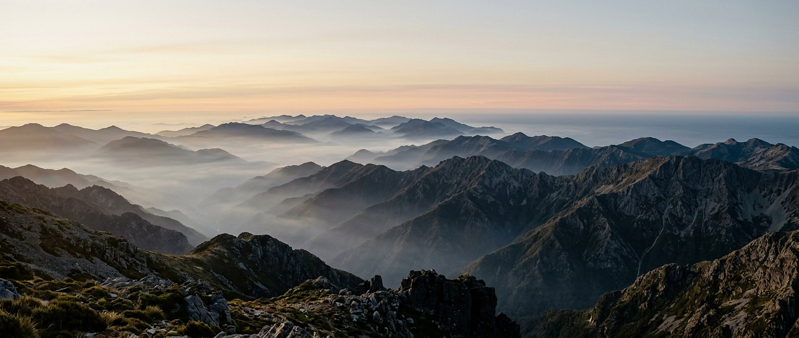
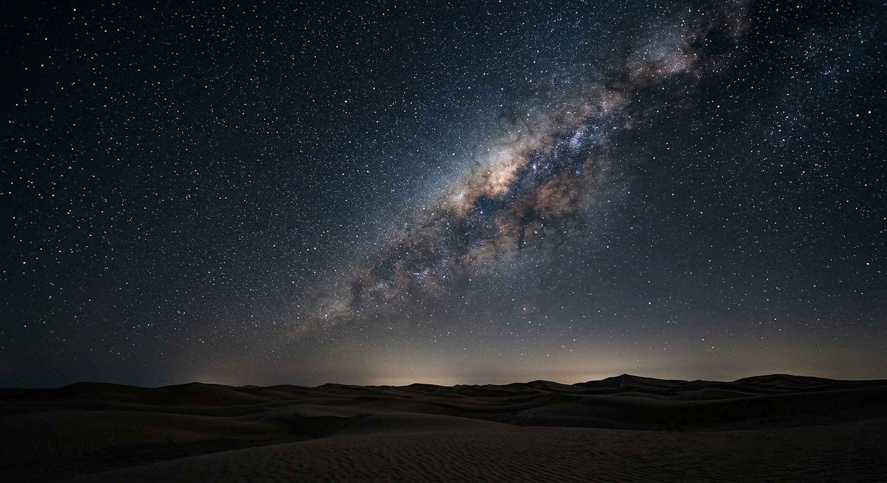

Vingt-deux salles, une seule question. Voici ce que la création donne à voir — et ce qu’elle ne dit pas.
Faits établisPoints débattusRéflexion signalée

Ses qualités invisibles se discernent par les choses faites.
Crédit : Illustration générée pour CREATIO · Licence : Usage interne au site
Cette salle est une méditation, pas une démonstration. Les faits qu’elle cite sont vérifiés et renvoient à leurs salles ; les qualités qu’elle en tire sont une lecture, et rien d’autre. La salle 21 l’a établi avec la position de l’Académie nationale des sciences : la science ne peut pas étudier ce qui appartient au surnaturel. Le passage du « comment » au « qui » n’est donc pas scientifique, et ce musée ne le présente jamais comme tel.
Textes bibliques cités
« Ses qualités invisibles se discernent, depuis la création du monde, par les choses faites. »
Romains 1:20
Le verset pilier : il ne dit pas que la création démontre, il dit qu’elle donne à voir.
« Les cieux proclament la gloire de Dieu ; le firmament raconte l’œuvre de ses mains. Sans parole, sans mots, leur voix n’est pas entendue. »
Psaume 19:1-3
Un langage sans paroles : celui des choses faites, précisément.
« Jéhovah est bon envers tous, et ses miséricordes sont sur toutes ses œuvres. »
Psaume 145:9
Une bonté affirmée, à laquelle cette salle ajoutera sa réserve : le monde est aussi dur.
« Toute la création gémit et souffre jusqu’à maintenant. »
Romains 8:22
La réserve indispensable de cette salle : le texte biblique lui-même ne déclare pas la création actuelle achevée.
M1
Puissance
L’univers a 13,787 ± 0,020 milliards d’années, et le Soleil convertit chaque seconde environ 4 milliards de kilogrammes de matière en énergie. Une puissance qui dure depuis des milliards d’années, sans maintenance et sans réserve visible.

De cent à quatre cents milliards d’étoiles dans notre seule galaxie.
Crédit : Illustration générée pour CREATIO · Licence : Usage interne au site
13,787 Ga · 4 × 10⁹ kg/sâge de l’univers · masse convertie par le Soleil chaque seconde
L’univers est âgé de 13,787 ± 0,020 milliards d’années ; le Soleil convertit environ 4 milliards de kilogrammes de matière en énergie chaque seconde.
Une réserve d’énergie qui n’a jamais eu besoin d’être rechargée, et qui a déjà duré plus de quatre milliards d’années pour notre seule étoile.
Nuance
Puissance mesurée, **qualité attribuée** : la salle donne la mesure, puis nomme la qualité comme une lecture. Ces chiffres proviennent des salles 01 et 04, où ils sont détaillés avec leur incertitude.
M2
Sagesse ordonnatrice
Les lois physiques permettent un accord entre un calcul et une mesure d’une part sur mille milliards — le moment magnétique de l’électron. Des lois assez régulières pour tenir à la douzième décimale, et assez universelles pour décrire l’atome et les galaxies avec les mêmes équations.
1 sur 10¹²accord entre théorie et mesure pour le moment magnétique de l’électron
La précision extrême des prédictions physiques — un accord d’une part sur mille milliards — est le fait qui fonde, dans cette salle, la qualité de « sagesse ordonnatrice ».
Une règle du jeu écrite avec assez de rigueur pour être vérifiée à la douzième décimale — et qui vaut partout où l’on regarde.
Nuance
Un accord numérique impressionnant reste un accord numérique : c’est un triomphe de la théorie physique, pas une preuve théologique. Le musée a écrit cette phrase en salle 17, et il la répète ici.
M3
Générosité et prévoyance
L’eau et les cycles biogéochimiques rendent la vie durable : un azote recyclé par des bactéries, un carbone qui circule, une eau qui ne s’use pas. Environ 48 % de l’humanité dépend aujourd’hui d’azote fixé industriellement — en imitant, à grande échelle, ce que des bactéries font depuis toujours.
≈ 48 %de l’humanité dépendant de l’azote fixé industriellement (2008)
Les cycles de l’eau, du carbone et de l’azote rendent la vie durable ; environ 48 % de l’humanité dépend d’azote fixé industriellement, sur un modèle que des bactéries réalisent depuis toujours.
Un équilibre chimique planétaire, gratuit, qui nourrit des milliards d’humains — et qu’il a fallu imiter industriellement pour suivre la demande.
Nuance
Le chiffre de 48 % date de 2008 et concerne l’azote : il est donné avec son année, jamais comme un état permanent. Ces faits sont détaillés dans les salles 07 et 08.
M4
Variété et beauté
La variété va jusqu’à des couleurs sans pigment — la baie de *Pollia condensata*, qui réfléchit la lumière par sa seule structure — et jusqu’à des nombres cosmiques : de l’ordre de 100 à 400 milliards d’étoiles dans notre galaxie, et un univers observable qui compte de l’ordre de plusieurs centaines de milliards de galaxies.
Une graine qui vole sur un tourbillon : l’économie et la patience du vivant.
Crédit : Illustration générée pour CREATIO · Licence : Usage interne au site
0 pigmentcouleur structurelle de *Pollia condensata* (et 100 à 400 Md d’étoiles dans la Voie lactée)
La beauté peut naître de la seule géométrie : la baie de Pollia condensata produit sa couleur par sa nanostructure, sans pigment ; la Voie lactée compte de l’ordre de 100 à 400 milliards d’étoiles.
De la couleur obtenue sans colorant, et des nombres qui dépassent l’imagination — dans le même univers.
Nuance
Le nombre de galaxies est donné en fourchette (« quelques centaines de milliards ») conformément à la correction de la salle 04 : aucun chiffre unique n’est publié pour ce total.
M5
Art de l’ingénieur et patience
Une graine de pissenlit vole grâce à un tourbillon dont la porosité optimise la portance avec un minimum de matière. Le corps humain combine environ 100 000 battements cardiaques et 180 litres filtrés par jour. Et l’ADN recopie trois milliards de lettres avec un taux d’erreur de l’ordre d’une base sur un milliard.
L’art de l’ingénieur : le minimum de matière, la précision du geste, l’endurance.
Crédit : Illustration générée pour CREATIO · Licence : Usage interne au site
1 sur 10⁹taux d’erreur de la réplication de l’ADN (et 100 000 battements, 180 L filtrés par jour)
Économie, précision et endurance coexistent dans le vivant : portance d’un pissenlit à partir d’un tourbillon, 100 000 battements cardiaques et 180 litres filtrés par jour, réplication de l’ADN fidèle à l’ordre d’une erreur sur un milliard.
Trois signatures d’un travail bien fait : le minimum de matière, la précision du geste, l’endurance sans interruption.
Nuance
Chaque valeur renvoie à sa salle (12, 18, 10) et à sa source primaire. Aucune n’est arrondie ici pour faire plus d’effet qu’ailleurs dans le musée.
M6
La réserve indispensable
La création comporte aussi la prédation, la maladie, la souffrance et les extinctions. Une salle qui conclurait « tout est bon » au sens moral serait malhonnête, et contredite par ce que tout être humain observe. Le texte biblique lui-même parle d’une création qui gémit.
non résoluproblème de la souffrance — sans réponse apportée par le musée
La prédation, la maladie, la souffrance et les extinctions font partie du monde observé : le musée ne conclut pas que la création actuelle serait moralement bonne en toutes ses parties.
Un monde magnifique et dur à la fois : les deux constats tiennent ensemble, et aucun des deux n’annule l’autre.
Nuance
Sans cette réserve, la salle serait un sermon. Le musée ne propose **aucune explication de la souffrance** : ni théodicée complète, ni réponse au problème du mal. Il cite Romains 8:22 comme texte biblique, et s’arrête là.
Ce que la science dit honnêtement
Les limites, dites franchement
Cette salle est une méditation, pas une démonstration
Les faits cités sont vérifiés et renvoient à leurs salles ; les qualités attribuées à Jéhovah sont une lecture de ces faits. Le passage du « comment » au « qui » n’est pas scientifique — établi en salle 21 avec la position de l’Académie nationale des sciences, et rappelé ici en tête de salle.
La souffrance n’est pas expliquée
Ni théodicée complète, ni réponse au problème du mal : le musée constate, cite Romains 8:22, et s’arrête. Promettre une explication irait au-delà de ce que les textes et les faits permettent — et un visiteur qui souffre mérite mieux qu’une formule.
Aucune supériorité, aucune exclusion
Cette salle ne dit jamais que le visiteur doit croire, ni que ceux qui ne croient pas sont de mauvaise foi. Elle propose une lecture et laisse la conclusion — c’est la règle du musée depuis la première salle, et elle ne change pas dans la dernière.
Réflexion — et non mesure
Lecture proposée
Vingt-deux salles, une seule question. De l’univers à l’atome, de l’eau au cerveau, nous avons vu des nombres, des mesures, des incertitudes assumées et des corrections infligées à de belles histoires. Rien de tout cela ne dit « Dieu » ; et pourtant, pour qui lit ces faits avec le regard de Paul, ils disent quelque chose : une puissance qui n’a pas de limite connue, une sagesse qui se laisse calculer, une générosité qui a rendu la vie possible, une patience qui a produit la variété. Quatre figures, quatre ailes, un même Auteur — c’est la lecture du musée, et il ne la confond pas avec ses mesures. Le monde est aussi dur : la faim, la maladie, la mort y ont leur place, et la Bible ne prétend pas que la création actuelle soit achevée. Ce que propose ce musée est donc plus modeste et plus solide : des faits vérifiables, une méthode honnête, une lecture assumée. Au visiteur de conclure.
« Ses qualités invisibles se discernent, depuis la création du monde, par les choses faites. »
Romains 1:20
Questions honnêtes
Les objections, prises au sérieux
« Pourquoi Jéhovah et pas “Dieu” en général ? »
Parce que le site suit sa charte éditoriale, fondée sur le nom employé dans les Écritures. Le musée ne prétend pas que ce choix soit neutre : il l’annonce.
« Et le mal naturel, les séismes, les cancers ? »
Le musée ne les explique pas. Il ne dit pas non plus que la création est parfaite aujourd’hui : Romains 8:22 est cité précisément pour cela. C’est un manque assumé, écrit noir sur blanc plutôt que masqué.
« Cette salle n’est-elle pas un sermon déguisé ? »
Elle est signalée comme méditation dès son chapô, ses faits renvoient à des salles mesurées, et la position de l’Académie nationale des sciences y figure. Le visiteur sait toujours quand il lit une mesure et quand il lit une lecture.
« Pourquoi ces quatre qualités plutôt que d’autres ? »
Parce qu’elles correspondent aux quatre figures choisies au départ — Législateur, Bâtisseur bienveillant, Ingénieur, Artiste — et aux ailes du musée. Ce n’est pas une liste exhaustive des attributs divins, et le musée ne le prétend pas.
« Que faire de tout cela ? »
Rien n’est imposé. Le site propose une réflexion ; il ne demande ni adhésion ni engagement. Un visiteur qui repart en désaccord, mais mieux informé, a reçu ce que ce musée pouvait donner.
Ce que l’on pourra manipuler
Interactions de la salle
Chaque interaction possède un repli lisible sans JavaScript.
Interaction
Contenu
Repli
La galerie des quatre figures
Quatre portes — le Législateur, le Bâtisseur bienveillant, l’Ingénieur, l’Artiste. Chacune ouvre sur trois faits déjà vus dans les ailes correspondantes, avec le lien vers la salle d’origine et sa source.
Les quatre figures, leurs trois faits et les liens vers les salles, en texte.
« Mesure ou lecture ? »
Chaque affirmation de la salle est étiquetée en direct par le visiteur : mesuré / débattu / lecture. Correction immédiate. L’interaction phare de la salle, parce qu’elle rend la salle auto-critique.
Le tableau des affirmations avec leur statut, en toutes lettres.
Balance du monde
Un curseur « beauté / dureté » alimenté par des faits réels des deux côtés. Le site refuse de trancher à la place du visiteur : aucun score n’est calculé.
Deux colonnes de faits réels, l’une et l’autre sourcées, sans conclusion.
Lettre au visiteur
Une page finale, imprimable, en texte seul : ce qui a été mesuré, ce qui a été corrigé, ce qui reste une lecture. À emporter.